The Khaki Field Auto Chrono is the summit. Below it the ground shifts — and somewhere on the way down, the tick stops being mechanical. Here's the whole climb.
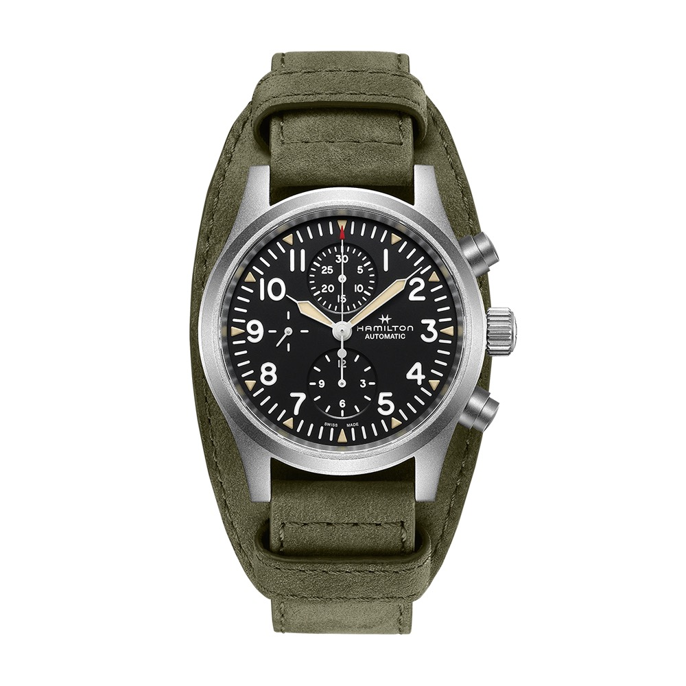
The one you wantKhaki Field Auto Chrono · H-21 · 60h £1,615Price falls top to bottom. Colour tells you what's actually keeping time — because a mechanical chronograph is costly to build, and that cost is the whole story of this ladder.
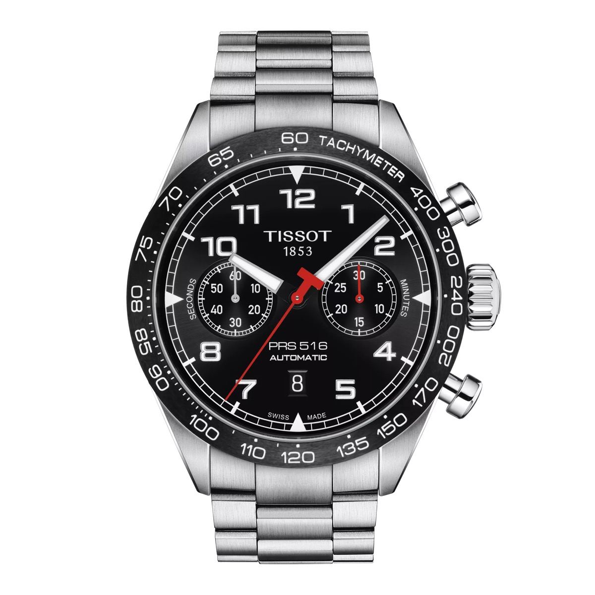
Tissot PRS 516 Automatic Chrono Valjoux A05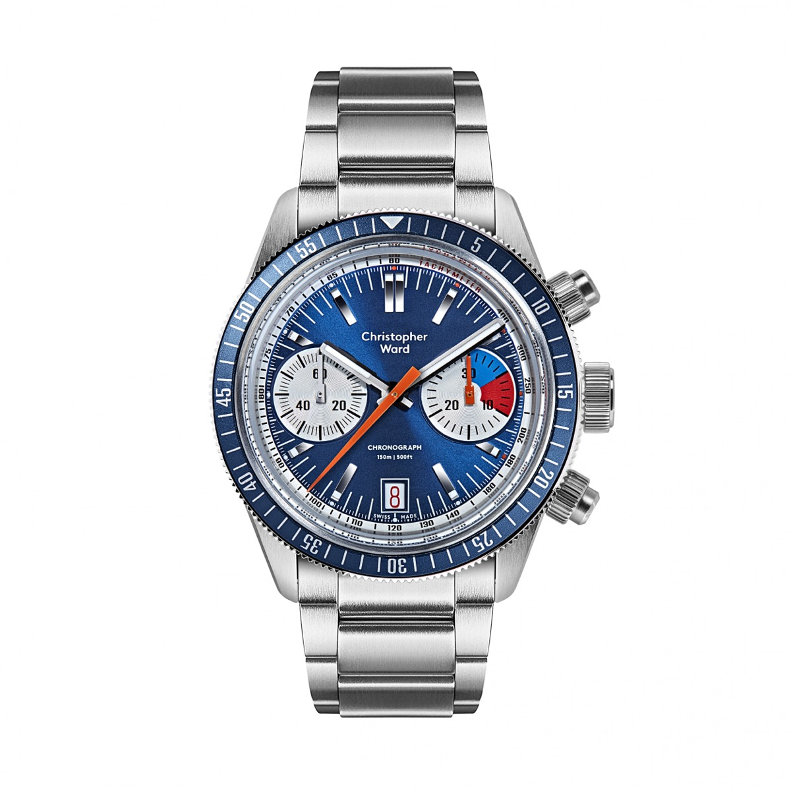
Christopher Ward C65 Chronograph “Wild Thing” Sellita SW510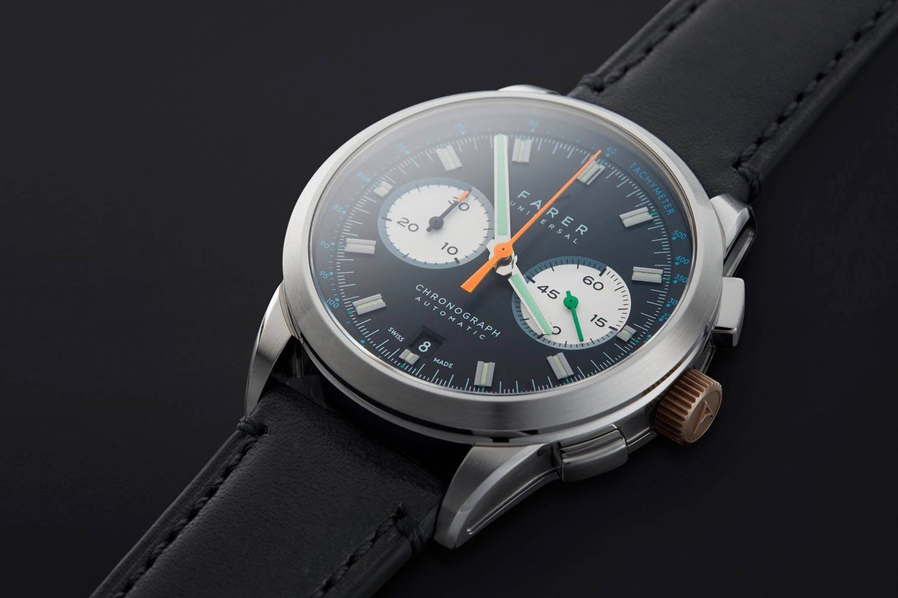
Farer mechanical chronograph Sellita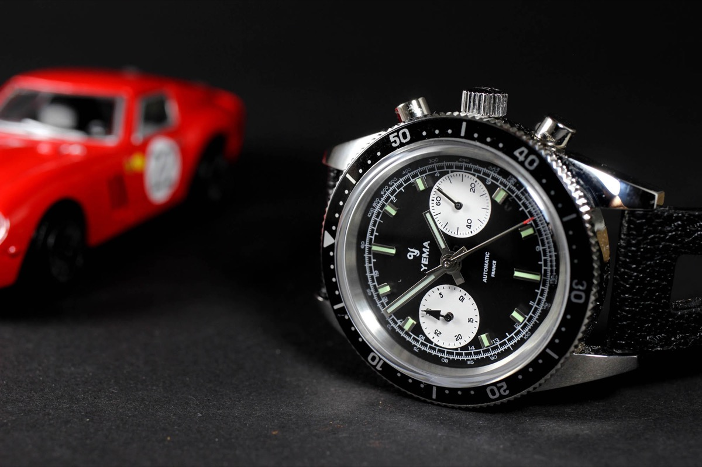
Yema Speedgraf / Flygraf Valjoux-based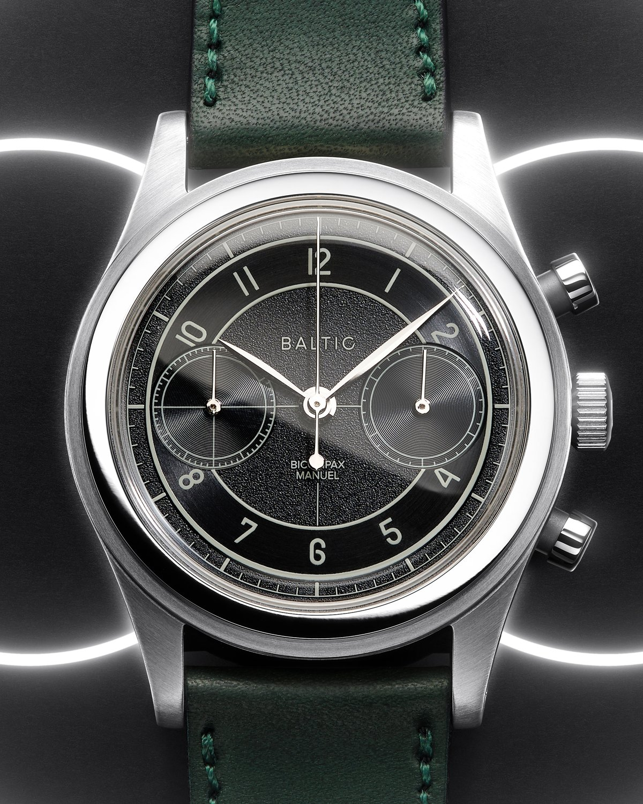
Baltic Bicompax 002 Seagull ST1901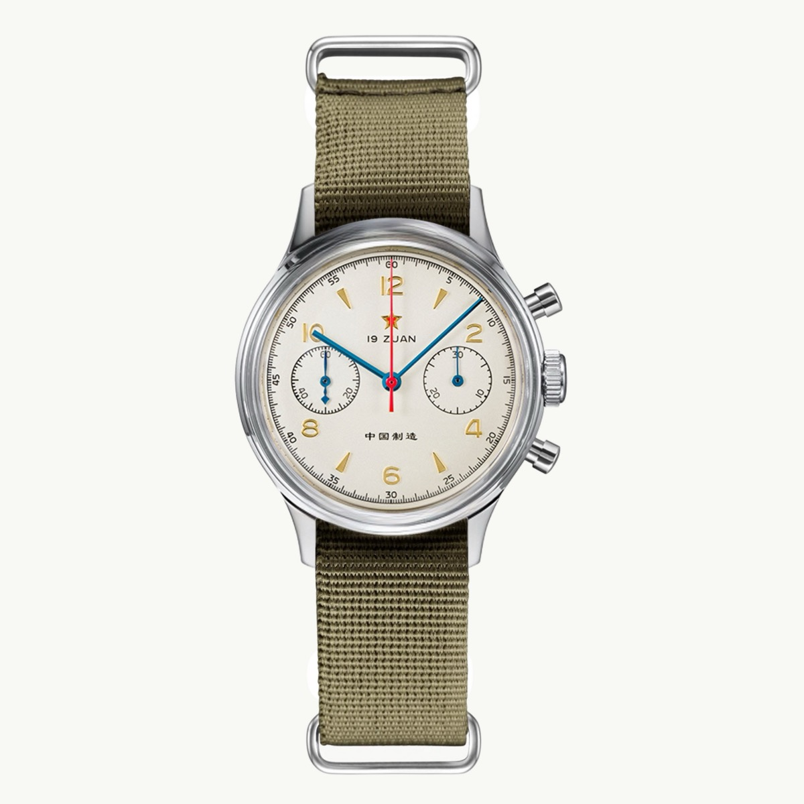
Seagull 1963 / Sugess reissue ST19 family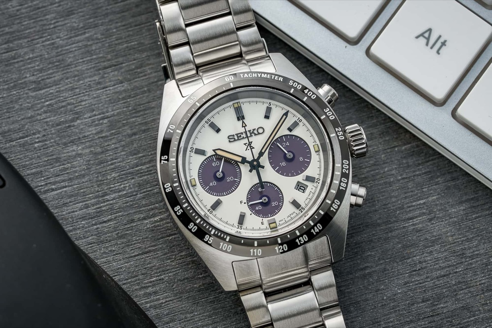
Seiko Prospex Speedtimer Solar Chronograph Solar V192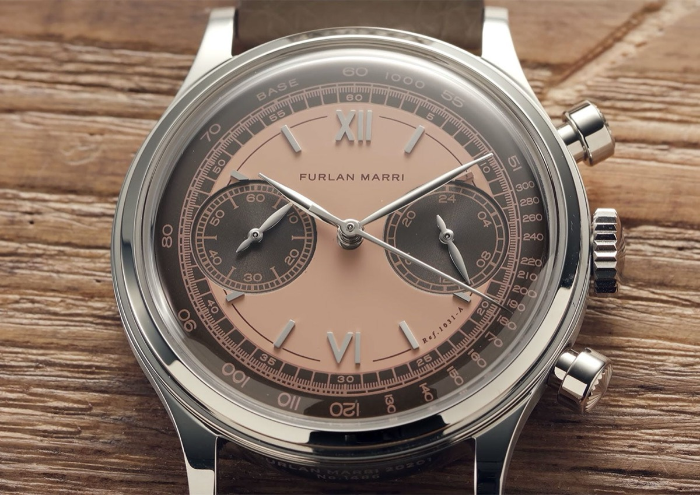
Furlan Marri mono-pusher Meca-quartz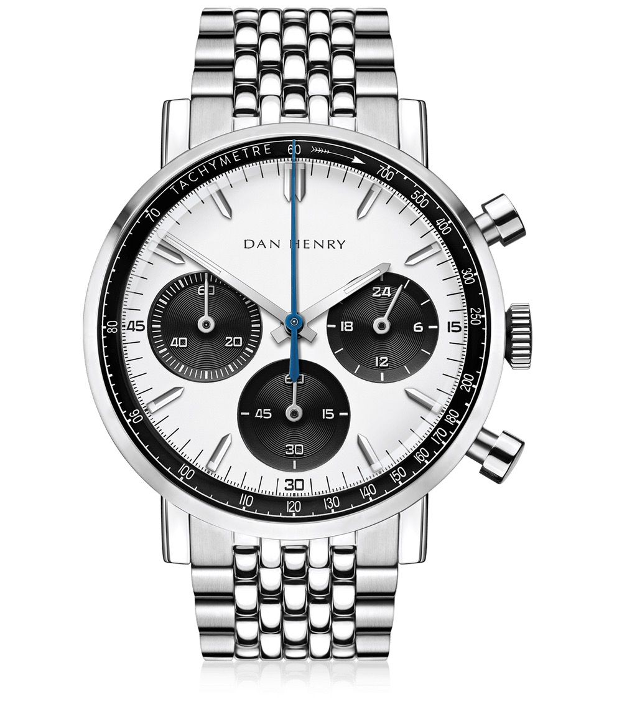
Dan Henry 1964 / 1962 Meca-quartz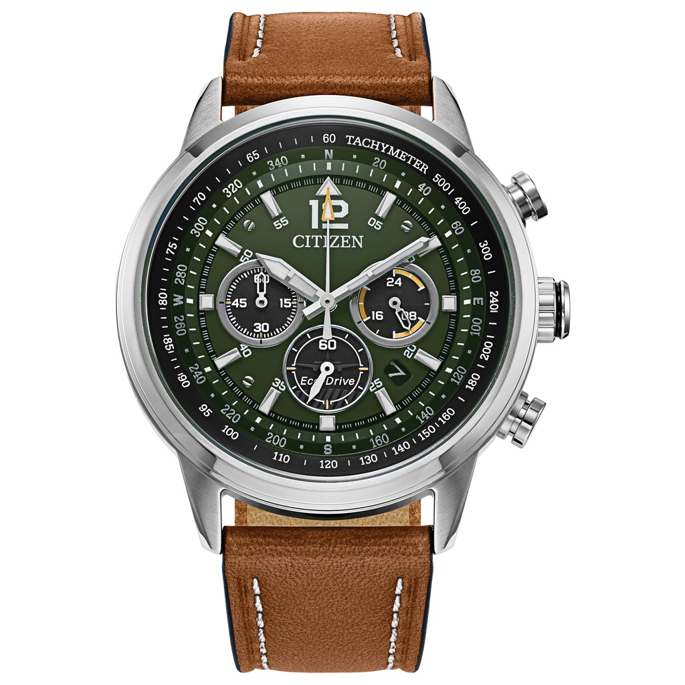
Citizen Eco-Drive Chronograph Solar quartz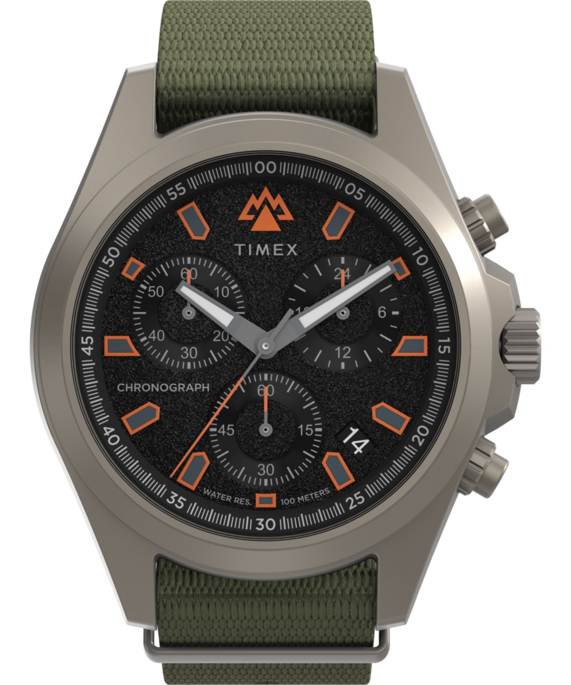
Timex Expedition / Standard Chrono QuartzEach watch as a true-to-scale circle — just the case size, nothing else — set inside your Apple Watch Ultra's outline (the red 44 × 49 mm square) so you can see exactly how much smaller each one wears.
Outlines are to scale; figures are nominal case diameter (excluding crown). The red dashed shape is the Apple Watch Ultra (44 × 49 mm) behind every watch; the Hamilton (gold) is the summit.
The pull is a chronograph you wind and watch sweep through the caseback. Then there's no shortcut: take the Seagull route under £700, or save for the Tissot at peer money. The middle is a mirage.
Stop at Baltic Bicompax 002 — or hold for the Hamilton itself.
The pull is the field-chrono face on the wrist, and you don't care what's behind the dial. Then the rational stop is obvious and it's a third of the price.
Stop at Seiko Speedtimer Solar, £429, and don't look up.